0. Госпиталь и недопустимые потери
В важных боях нужно следить не только за захватом объекта, но и за состоянием госпиталя. После поражения около 30% войск отряда попадают в госпиталь как тяжелораненые. Пока в госпитале есть место, эти войска можно вернуть. Когда госпиталь переполняется, войска начинают погибать окончательно.
Восстанавливать такие потери через Военное Бюро очень дорого или очень долго. Поэтому задача игрока — не допускать переполнения госпиталя, вовремя лечиться и, если ситуация выходит из-под контроля, лучше временно выйти из боя на лечение, чем потерять невосполнимые тысячи, десятки и сотни тысяч войск.
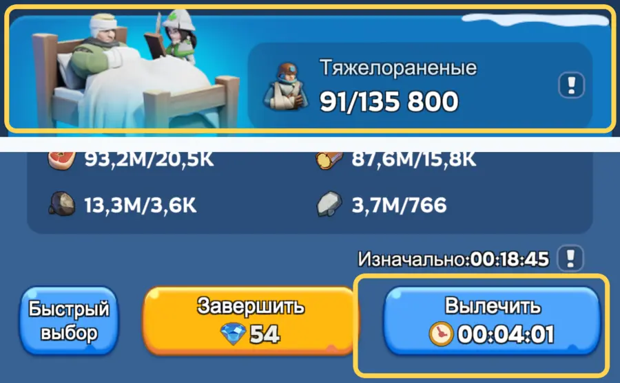
Базовый принцип бесплатного по времени лечения простой: выгодно выставлять для лечения количество войск, кратное 4 минутам. Каждая помощь альянса моментально лечит 4 минуты. Если в альянсе есть, например, 5 игроков с Ультраценной картой, то вы получаете мгновенное лечение партий суммарно до 20 минут без расхода ускорений.
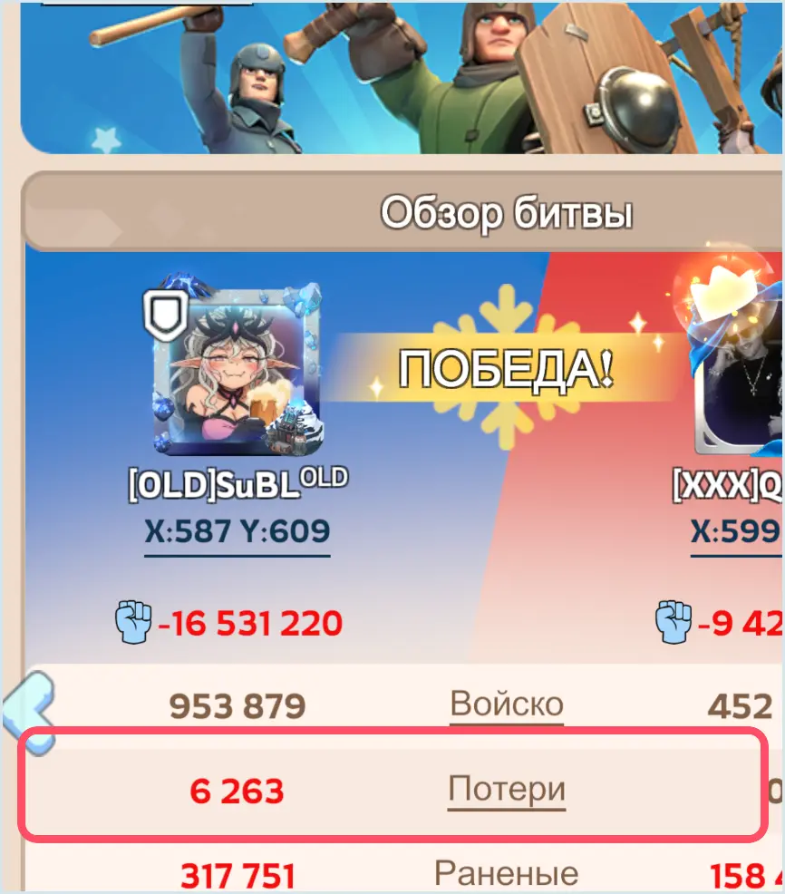
1. Герои и формации
Для боёв за объекты мы используем не «красивые тройки», а рабочие сборки под конкретную задачу. Ниже — стандартные отряды для атаки и для защиты.
Атака
В атаку ставим первым только Джесси или Джассера. Это универсальная формация для участия в рейде по объекту.
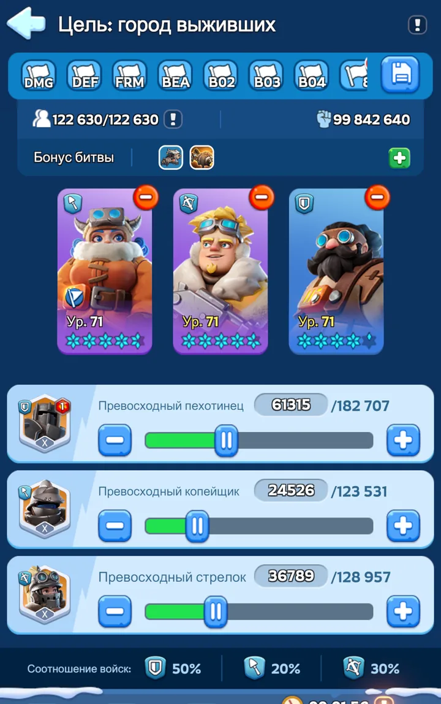
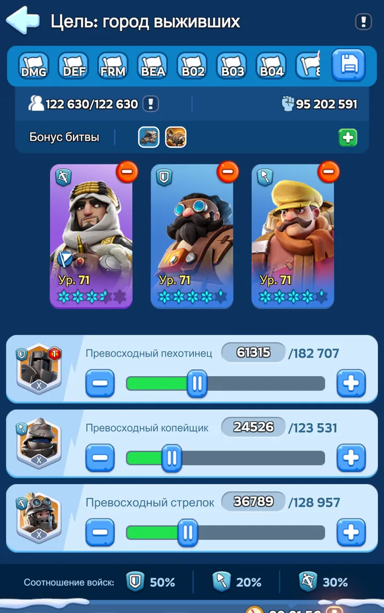
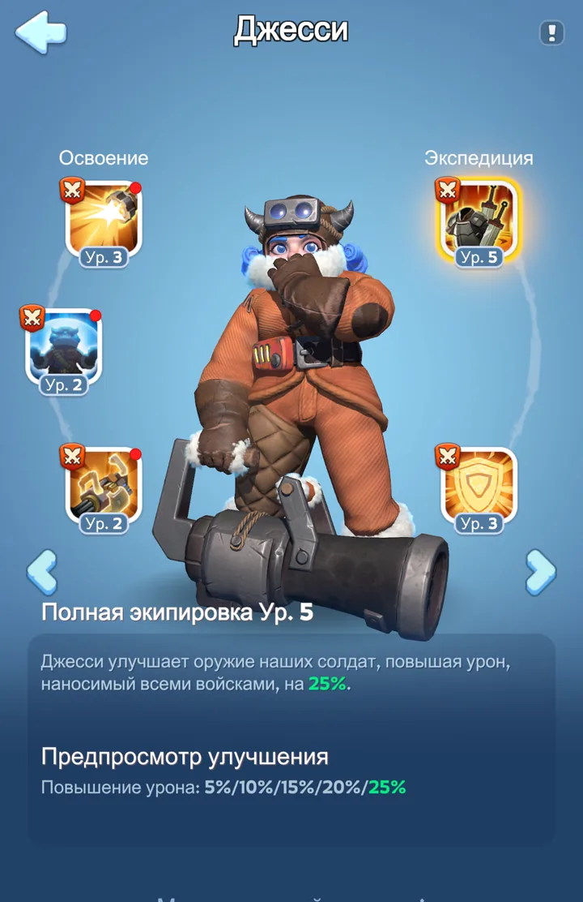
Джесси. Экспедиционный навык повышает урон, наносимый всеми войсками. Именно ради этого навыка она ставится первой.
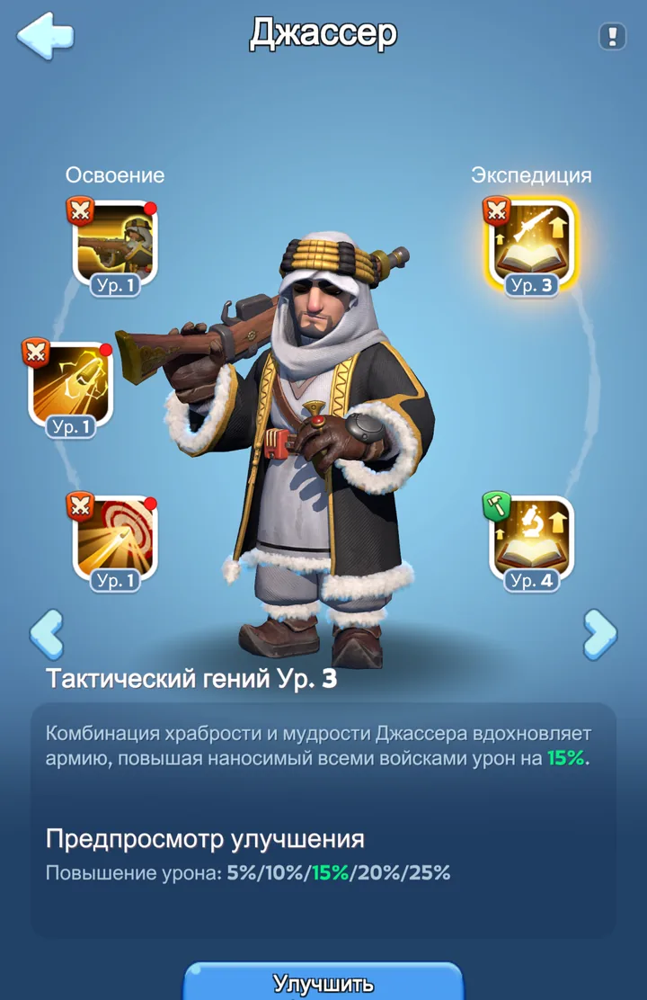
Джассер. Экспедиционный навык также повышает урон всех войск. По задаче это прямой аналог Джесси для участия в атаке.
Защита
После захвата объекта для удержания ставим первым Сергея, Патрика или Бахити. Кого именно использовать, задают офицеры альянса.
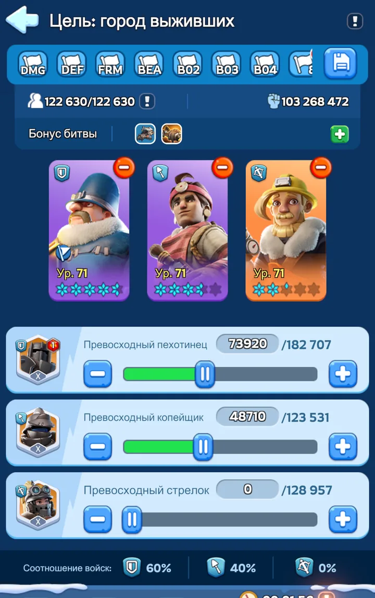
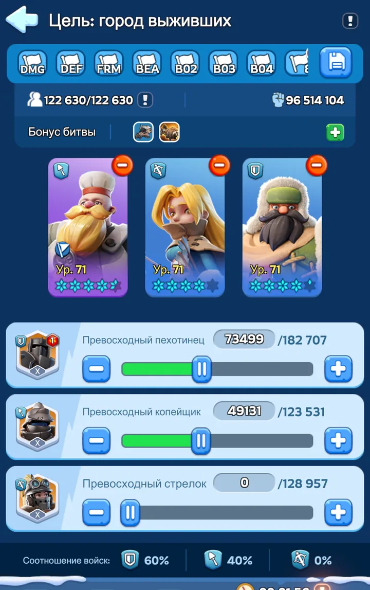
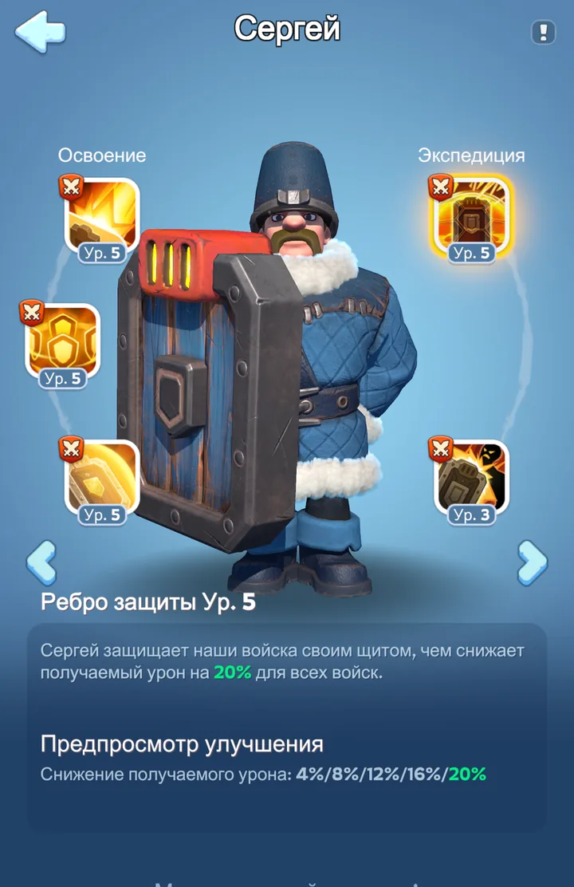
Сергей. Экспедиционный навык снижает получаемый урон всеми войсками. Это один из базовых защитных навыков для гарнизона.
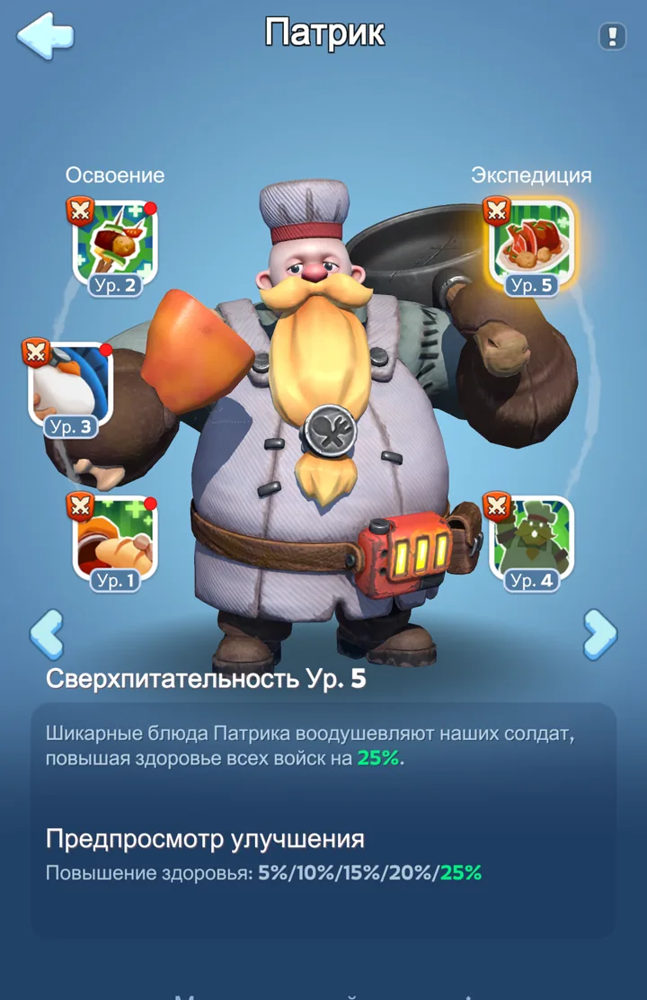
Патрик. Экспедиционный навык повышает здоровье всех войск. Это стандартный вариант для защиты объекта.
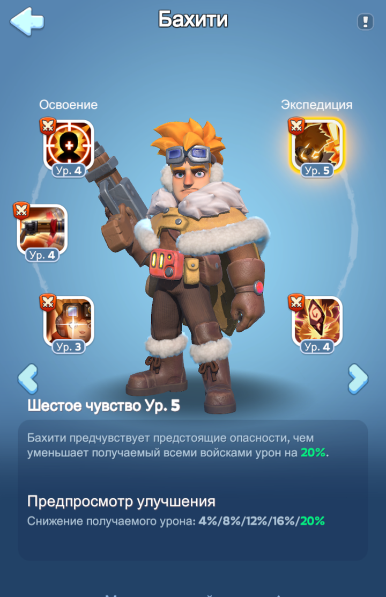
Бахити. Экспедиционный навык Шестое чувство снижает получаемый урон всеми войсками. Поэтому Бахити тоже подходит как первый герой для защитного гарнизона, если офицеры разрешили его в конкретном бою.
2. Почему атака и защита разные
Атакующий отряд и защитный отряд решают разные задачи, поэтому и собираются по-разному. В атаке нам нужно как можно быстрее выбить вражеский гарнизон. Для этого берём Джесси или Джассера и добавляем стрелков в формацию 50 / 20 / 30 — они помогают быстрее разбирать пехотный фронт противника.
После захвата задача меняется. Теперь объект нужно пережить под входящим ударом, поэтому мы отказываемся от стрелков, увеличиваем долю пехоты и оставляем копейщиков как второй опорный тип войск. Отсюда и защитная формация 60 / 40 / 0 с Сергеем, Патриком или Бахити первым героем.
3. Горячая замена
После успешного захвата объекта атакующий отряд не должен долго стоять внутри. Его задача выполнена. Дальше нужно быстро заменить атакующую конфигурацию на защитную, не оставив объект пустым ни на секунду.
На СвС важно разделять атаку и свой гарнизон. Параллельные атакующие действия запрещены: нельзя одновременно вести рейд и отправлять личную атаку, бить башню и замок или запускать два удара. Но после захвата своего объекта, особенно в бою за замок, игрок обязан сам отправлять марши в собственный гарнизон для замены и пополнения.
4. Атака и замена на СвС
Общая схема замены
- Рейд альянса захватывает объект. Ваш атакующий отряд остаётся внутри.
- Сразу после захвата отправляете отдельный защитный отряд с Сергеем, Патриком или Бахити и формацией 60 / 40 / 0.
- Следите за временем его прибытия. Когда остаётся примерно 5 секунд, выводите старый отряд с Джесси или Джассером.
- Защитный отряд заходит на освободившееся место и дальше используется для удержания объекта.
Это базовая схема замены: сначала объект забирается атакой, затем атакующий отряд меняется на защитный. На СвС после захвата своего объекта эта замена обязательна.
СвС: атака отдельно, гарнизон отдельно
- В атаку выбираем одно направление: башня или замок. Нельзя одновременно вести рейд и отправлять личный атакующий марш, бить башню и замок или запускать два атакующих марша.
- После захвата своего объекта можно отправлять марши в собственный гарнизон. Это уже не атака, а замена или пополнение.
- Если внутри стоит ваш атакующий отряд, вы сами подводите защитный отряд с Сергеем, Патриком или Бахити и формацией 60 / 40 / 0.
- В замке замена и пополнение в свой гарнизон обязательны: игроки должны сами поддерживать свои отряды, потому что любое проседание гарнизона может стоить объекта.
Иными словами: в атаку не распыляемся, а свой гарнизон обслуживаем активно. Удар по вражескому объекту и замена собственного гарнизона — разные задачи, и путать их нельзя.
5. Пополнение гарнизона
Пополнение — это не новая горячая замена. Нужный защитный отряд уже стоит внутри объекта и остаётся там. Вы отправляете к нему дополнительные войска, а по прибытии игра заполняет освободившиеся места в существующем отряде.
Для обычного пополнения новые герои не нужны. Мы не меняем состав по героям и не заводим новый отряд, а просто возвращаем численность уже стоящему гарнизону.
6. Синхронизация времени
При отправке отряда смотрим не только на состав, но и на время в пути. Его показывает кнопка «Отправить» внизу экрана. Для атакующих рейдов на СвС это время нужно, чтобы подстроиться под общий момент удара.
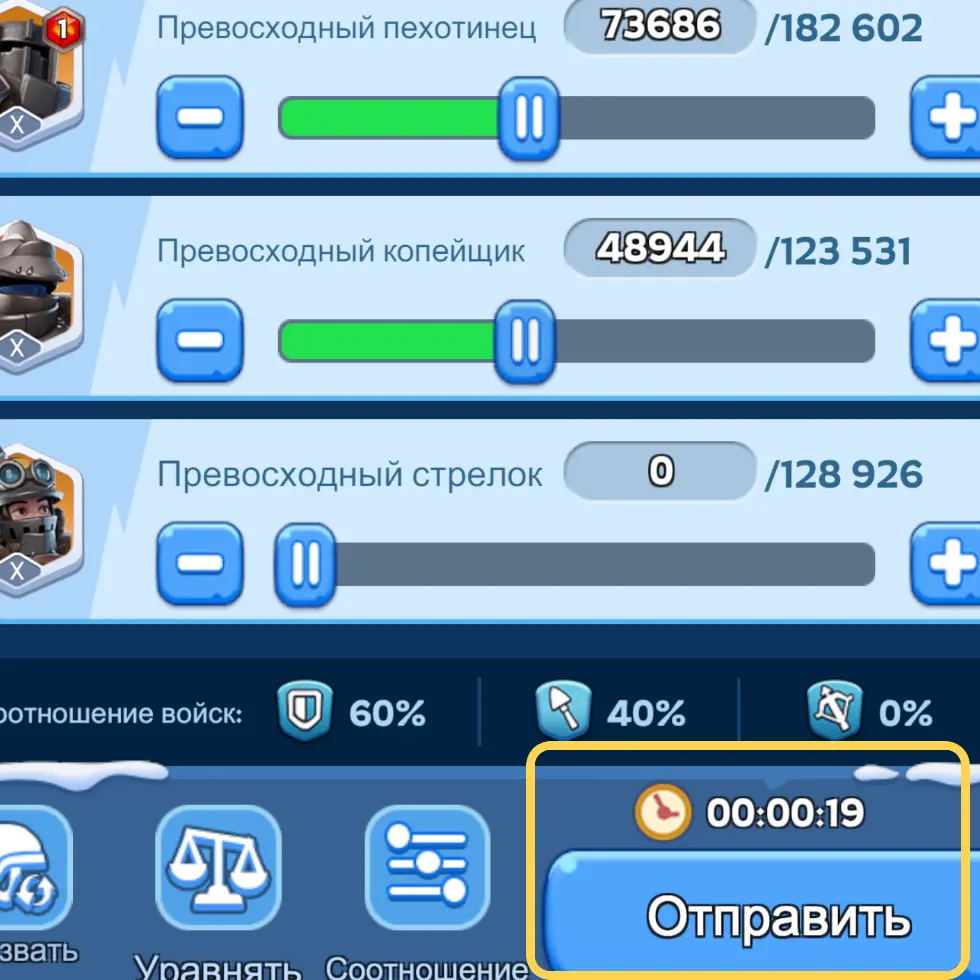
Как работает синхронизация
- Инициатор выбирает цель и смотрит своё суммарное время: минимальные 5 минут ожидания рейда плюс ход до объекта.
- Он закладывает окно на подготовку команды: обычно 2–3 минуты, у опытной группы меньше. Целевое время удара всё равно должно быть позже, чем сейчас + 5:00 + путь.
- В чат пишется конкретная команда: «Западная башня, удар 21:46:30».
- Все остальные лидеры рейдов подстраивают свои запуски так, чтобы их удары пришли именно к этому времени.
Пример расчёта
Во время плотного боя дополнительно следим за двумя зонами на карте: слева — наши марши и время их прибытия, справа — таймеры ближайших вражеских ударов или рейдов. Но базовая команда для синхрона всегда формулируется через целевое время попадания, а не через разрозненные отправки без общей секунды удара.
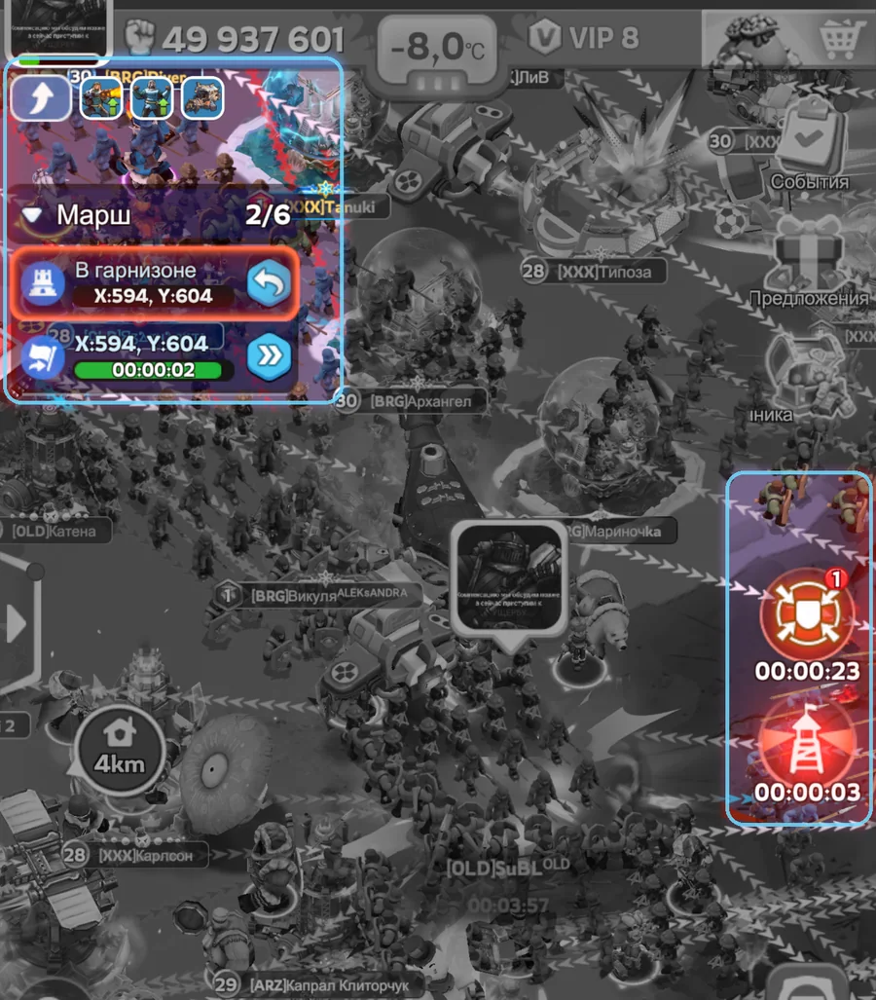
7. Дробное пополнение для каждого игрока
Этот приём нужен не только офицерам. Любой игрок, который следит за входящими ударами, может заранее подвести подкрепление так, чтобы оно пришло сразу после вражеского удара — например через 00:01 после него. Если это умеют делать многие участники, гарнизон становится заметно труднее выбить даже серией вражеских рейдов.
На СвС в свой гарнизон можно отправлять несколько маршей пополнения. В замке это особенно важно: если гарнизон просел после удара, игроки обязаны быстро вернуть численность, не ожидая, что кто-то централизованно заменит их отряд.
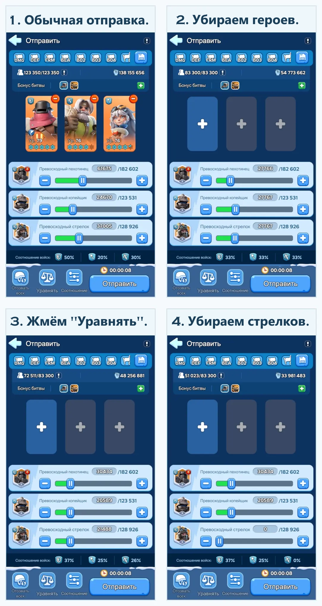
- Открываете отправку подкрепления и оцениваете, когда именно после вражеского удара должны прийти ваши войска.
- Через «минус» убираете героев. Для такого пополнения герои не нужны.
- Нажимаете «Уравнять», чтобы быстро разделить войска на удобные части.
- Убираете всех стрелков. Для пополнения гарнизона по нашей схеме нужны только пехота и копейщики.
- Мини-отряды можно отправлять каждые 5–7 секунд, если задача — пополнить свой гарнизон. Не используем эти марши как параллельную атаку по другому объекту.
8. Типичные ошибки
- Неправильный первый герой. Если первым стоит не Джесси, не Джассер, не Сергей, не Патрик и не Бахити по ситуации, отряд теряет весь смысл.
- Джесси или Джассер остаются в защите. Они нужны, чтобы захватить объект, а не держать его под ответными ударами.
- Одинаковая формация на всё. 50 / 20 / 30 используется для атаки, 60 / 40 / 0 — для защиты.
- Слишком ранний вывод старого отряда. Между отзывом и приходом защиты появляется опасное окно.
- Смешивание атаки и гарнизона на СвС. Нельзя вести параллельные атаки по разным объектам, но после захвата своего объекта нужно отправлять замену и пополнение в свой гарнизон.
- Отсутствие общего времени удара. Лидеры рейдов стартуют «примерно сейчас» вместо конкретной команды вида «Западная башня, удар 21:46:30» и не учитывают обязательные 5 минут ожидания рейда.
- Отправка пополнения без расчёта. Подкрепление приходит слишком рано, погибает в ударе вместе с основным гарнизоном или вообще не успевает к следующей атаке.
- Бесконечное пополнение одного и того же отряда. Легкораненые постепенно блокируют доступный запас войск; периодически отряд нужно полностью вернуть в город.
9. Алгоритм участника
Когда идём в атаку
- Ставим первым Джесси или Джассера.
- Выбираем формацию 50 / 20 / 30.
- Присоединяемся к нужному рейду и следуем командам офицеров.
- На СвС не планируем параллельную атаку по другой башне или замку. После захвата своего объекта готовимся к замене и пополнению собственного гарнизона.
Когда объект захвачен в обычном режиме
- Готовим отдельный отряд с Сергеем, Патриком или Бахити — кого указали офицеры.
- Выбираем формацию 60 / 40 / 0 и отправляем её к объекту.
- Примерно за 5 секунд до прибытия защиты выводим свой старый атакующий отряд.
Когда объект захвачен на СвС
- Если внутри стоит ваш атакующий отряд, готовим защитную замену с Сергеем, Патриком или Бахити.
- Отправляем замену в свой гарнизон. В замке это обязанность каждого игрока, чей отряд стоит внутри.
- Перед прибытием защиты выводим старый атакующий отряд, чтобы место сразу заняла правильная формация.
- Если гарнизон проседает после ударов, отправляем пополнение или карусель по таймингу команды.
- Не используем эти действия как повод открыть параллельную атаку по другой башне или замку.
Когда гарнизон уже стоит
- После вражеского удара смотрим, сколько войск осталось в нашем отряде.
- Если первый герой и формация остаются правильными, не меняем отряд без причины — просто пополняем гарнизон.
- Если ожидается серия ударов, стараемся не ограничиваться одним крупным пополнением: дробные мини-отряды часто работают надёжнее.
- Следим не только за госпиталем, но и за общим количеством доступных войск. Войска, которые стали легкоранеными в гарнизоне, нельзя отправить повторно, пока исходный отряд не вернулся в город.
- Между вражескими рейдами периодически делаем полную безопасную замену: возвращаем старый отряд, разблокируем легкораненых и снова заводим свежую защиту.
10. Для офицеров и лидеров рейдов и гарнизона
Ниже — приёмы, которые уже требуют координации нескольких людей. Это уровень офицеров, тактиков и лидеров рейдов, но обычным участникам тоже полезно понимать, что именно от них будут требовать.
Одновременный удар на СвС
Рейд-лидеры синхронизируют не отправку, а момент попадания. Инициатор смотрит своё время, добавляет окно на подготовку команды и пишет в чат цель с точной секундой удара. Остальные лидеры считают свой запуск по формуле целевое время удара − 5:00 ожидания рейда − время в пути.
Требовать дробное пополнение от участников
Приём из раздела «Дробное пополнение для каждого игрока» должен использоваться не эпизодически, а как стандарт. Особенно это важно против одновременных рейдов противника. Чем больше игроков умеют подводить мини-отряды сразу после удара, тем сложнее выбить гарнизон даже сильной серией атак.
Согласованная утрата гарнизона
Иногда офицеры заранее понимают, что текущий гарнизон удар не выдержит. В такой ситуации можно договориться с союзным альянсом, чтобы он ударил по нашему объекту сразу после вражеского рейда.